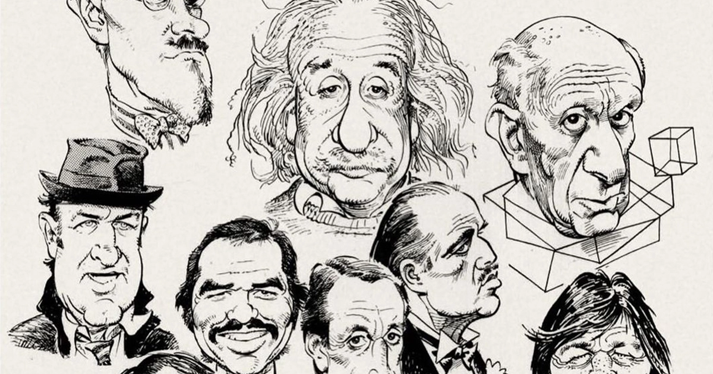
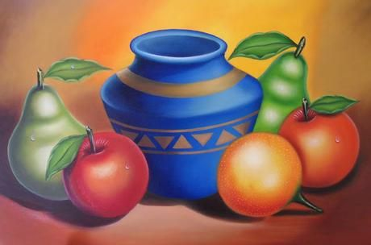

El éxito del dibujo artístico se logra a partir de las diversas técnicas con las que se desarrolle únicamente. Lo fundamental es que cada artista deje su toque personal y creativo, pero sin la dedicación y el esfuerzo necesario. Según el estilo que adopte cada artista, se basará en una u otra técnica, e incluso en mezclar dos o más para crear sus obras.
Sin embargo, no cabe duda de que el dibujo artístico se caracteriza por mantener sus trazos firmes, seguros y al mismo tiempo sueltos, tanto como la perspectiva. Asimismo, es importante que todo artista del dibujo logre intelectualizar los objetos que desarrolle, con la finalidad de sintetizarlos de formas subjetivas.
Existen 8 tipos de dibujo artístico:
| DIBUJO ARTÍSTICO BÁSICO | Para iniciarse en el dibujo artístico es crucial partir desde lo básico. En este tipo de dibujos, se emplean técnicas sencillas, tales como el dibujo a mano alzada partiendo de trazos, proporciones, medidas y composición, principalmente. | |
| ILUSTRACIÓN | Generalmente, suele usarse como complemento de textos, ayudando de esta manera a los lectores a entender con mayor claridad el contenido escrito. La ilustración se puede realizar tanto de manera manual, como de forma digital, especialmente al desarrollar personajes únicos. |
|
| CARICATURA | Buscan plasmar la esencia de rasgos que caracterizan al retrato, bien sea a partir de la minimización de estos, o la maximización exagerada. En general, la caricatura artística suele encontrarse vinculado a la ilustración, tanto como en novelas gráficas. |  |
| RETRATO | Se caracteriza por representar de manera fiel de personas o animales. En los dibujos artísticos de retratos, se reflejan los detalles de cada uno de los rasgos del retratado lo más fiel posible. | |
| GRAFFITI | Son dibujos artísticos realizados exclusivamente en forma de murales, principalmente con pintura en aerosol. Su característica fundamental es que suelen representar figuras muy personalizadas, ideas propias del artista que la ejecuta. | |
| HIPERREALISMO | Se trata de dibujos cuyo realismo toca niveles exagerados, con tantos detalles que resultan ser realismo extremo. No es un secreto que para lograr dibujos hiperrealistas es necesario poseer grandes conocimientos en torno a la técnica. | |
| CÓMICS | Es uno de los tipos de dibujo artístico más aclamado, especialmente porque a nivel mundial cuenta con un gran número de fanáticos. En este caso, se trata de gráficos en serie que cuentan una historia. Los personajes en ellas suelen ser de ficción, romance, humor y más. |
 |
| BODEGONES | Son quizás los más clásicos del dibujo. Formaron parte del proceso creativo de aprendizaje de muchos grandes artistas de la historia, especialmente para el estudio del comportamiento de la luz sobre los objetos, e incluso el uso del color. |  |